CODING AGENTS AS PIXEL WORLD MODELS
traex/DeepSeek-V4.1-Flash · material_0045
点击播放 · 原生 RGB 像素
逐轮保存的候选
回放视频、检查图与代码变化。
每份候选均可单独播放。实际图片检查记录在下方工具轨迹中。
候选 01播放与检查图
点击播放 · 原生 RGB 像素

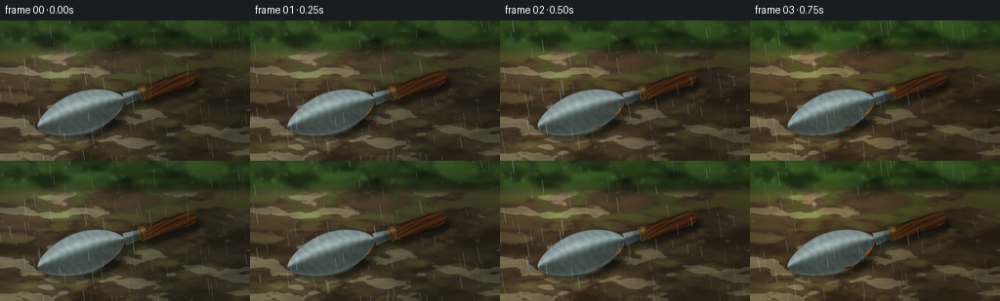
展开代码变化
--- 上一保存版本
+++ 本次保存版本
@@ -0,0 +1,523 @@
+from __future__ import annotations
+
+from pathlib import Path
+
+import numpy as np
+from PIL import Image, ImageDraw, ImageFilter
+
+import artifact_io
+
+
+WIDTH = 256
+HEIGHT = 144
+FRAMES = 20
+FPS = 4.0
+SCALE = 4
+W = WIDTH * SCALE
+H = HEIGHT * SCALE
+CASE_DIR = Path(__file__).resolve().parent
+
+
+def smoothstep(lo: float, hi: float, value: np.ndarray | float):
+ x = np.clip((value - lo) / (hi - lo), 0.0, 1.0)
+ return x * x * (3.0 - 2.0 * x)
+
+
+def resize_float(array: np.ndarray, size: tuple[int, int], resample=Image.Resampling.BICUBIC):
+ image = Image.fromarray(np.clip(array * 255.0, 0, 255).astype(np.uint8), "L")
+ return np.asarray(image.resize(size, resample), dtype=np.float32) / 255.0
+
+
+def blur_float(array: np.ndarray, radius: float):
+ image = Image.fromarray(np.clip(array * 255.0, 0, 255).astype(np.uint8), "L")
+ return np.asarray(image.filter(ImageFilter.GaussianBlur(radius)), dtype=np.float32) / 255.0
+
+
+def noise_field(rng: np.random.Generator, size: tuple[int, int], base: tuple[int, int], blur=0.0):
+ small = rng.random(base, dtype=np.float32)
+ image = Image.fromarray((small * 255).astype(np.uint8), "L")
+ image = image.resize(size, Image.Resampling.BICUBIC)
+ if blur:
+ image = image.filter(ImageFilter.GaussianBlur(blur))
+ return np.asarray(image, dtype=np.float32) / 255.0
+
+
+def fbm(rng: np.random.Generator, size: tuple[int, int], octaves=5):
+ result = np.zeros((size[1], size[0]), dtype=np.float32)
+ weight_sum = 0.0
+ for octave in range(octaves):
+ base = (max(2, 12 * (2**octave)), max(2, 7 * (2**octave)))
+ weight = 0.55**octave
+ result += weight * noise_field(rng, size, base, blur=1.0 + octave * 0.6)
+ weight_sum += weight
+ result /= weight_sum
+ return np.clip((result - result.mean()) * 2.8 + 0.5, 0, 1)
+
+
+def colorize(mask: np.ndarray, color: np.ndarray, alpha: float = 1.0):
+ return mask[..., None] * color[None, None, :] * alpha
+
+
+def composite(base: np.ndarray, color: np.ndarray, alpha: np.ndarray):
+ a = np.clip(alpha, 0, 1)[..., None]
+ return base * (1.0 - a) + color * a
+
+
+def seasonal_weights(s: float):
+ spring = np.clip(1.0 - abs(s - 0.0), 0, 1)
+ summer = np.clip(1.0 - abs(s - 1.0), 0, 1)
+ autumn = np.clip(1.0 - abs(s - 2.0), 0, 1)
+ winter = np.clip(1.0 - abs(s - 3.0), 0, 1)
+ return spring, summer, autumn, winter
+
+
+def season_palette(s: float):
+ palettes = [
+ # late spring: damp, fresh, soft green
+ dict(
+ foliage=np.array([0.095, 0.165, 0.070]),
+ leaf_hi=np.array([0.25, 0.36, 0.12]),
+ soil=np.array([0.255, 0.205, 0.135]),
+ soil_hi=np.array([0.43, 0.33, 0.20]),
+ moss=np.array([0.24, 0.34, 0.12]),
+ light=np.array([0.76, 0.81, 0.64]),
+ ambient=np.array([0.56, 0.67, 0.67]),
+ ),
+ # summer: warm, saturated, brighter rain
+ dict(
+ foliage=np.array([0.075, 0.185, 0.050]),
+ leaf_hi=np.array([0.33, 0.46, 0.11]),
+ soil=np.array([0.31, 0.215, 0.115]),
+ soil_hi=np.array([0.52, 0.36, 0.18]),
+ moss=np.array([0.24, 0.40, 0.09]),
+ light=np.array([0.91, 0.82, 0.55]),
+ ambient=np.array([0.62, 0.73, 0.69]),
+ ),
+ # autumn: ochre leaf litter, umber soil
+ dict(
+ foliage=np.array([0.245, 0.155, 0.050]),
+ leaf_hi=np.array([0.57, 0.30, 0.075]),
+ soil=np.array([0.275, 0.175, 0.095]),
+ soil_hi=np.array([0.48, 0.30, 0.14]),
+ moss=np.array([0.36, 0.29, 0.09]),
+ light=np.array([0.82, 0.58, 0.31]),
+ ambient=np.array([0.57, 0.58, 0.54]),
+ ),
+ # winter: cool, damp, with frost and silver light
+ dict(
+ foliage=np.array([0.125, 0.155, 0.135]),
+ leaf_hi=np.array([0.28, 0.34, 0.31]),
+ soil=np.array([0.205, 0.205, 0.185]),
+ soil_hi=np.array([0.39, 0.38, 0.34]),
+ moss=np.array([0.27, 0.31, 0.26]),
+ light=np.array([0.69, 0.76, 0.78]),
+ ambient=np.array([0.50, 0.61, 0.66]),
+ ),
+ ]
+ s = float(np.clip(s, 0, 3))
+ index = min(int(np.floor(s)), 2)
+ frac = s - index
+ frac = frac * frac * (3.0 - 2.0 * frac)
+ return {
+ key: palettes[index][key] * (1.0 - frac) + palettes[index + 1][key] * frac
+ for key in palettes[0]
+ }
+
+
+def make_static_layers(seed=7045):
+ rng = np.random.default_rng(seed)
+ y, x = np.mgrid[0:H, 0:W].astype(np.float32)
+
+ broad = fbm(rng, (W, H), octaves=4)
+ medium = fbm(rng, (W, H), octaves=5)
+ fine = fbm(rng, (W, H), octaves=6)
+
+ # Out-of-focus foliage masses in the upper band.
+ bokeh = Image.new("L", (W, H), 0)
+ bd = ImageDraw.Draw(bokeh)
+ for _ in range(95):
+ cx = int(rng.uniform(-40, W + 40))
+ cy = int(rng.uniform(-25, 118))
+ rw = int(rng.uniform(18, 95))
+ rh = int(rng.uniform(10, 52))
+ value = int(rng.uniform(55, 235))
+ bd.ellipse((cx - rw, cy - rh, cx + rw, cy + rh), fill=value)
+ bokeh_mask = np.asarray(bokeh.filter(ImageFilter.GaussianBlur(8)), dtype=np.float32) / 255.0
+ bokeh_mask *= smoothstep(165, 75, y)
+
+ # Fine, slightly blurred highlights for wet leaf bokeh.
+ glints = Image.new("L", (W, H), 0)
+ gd = ImageDraw.Draw(glints)
+ for _ in range(34):
+ cx = int(rng.uniform(0, W))
+ cy = int(rng.uniform(0, 105))
+ radius = int(rng.uniform(3, 10))
+ gd.ellipse((cx - radius, cy - radius, cx + radius, cy + radius), fill=int(rng.uniform(90, 230)))
+ glint_mask = np.asarray(glints.filter(ImageFilter.GaussianBlur(3.5)), dtype=np.float32) / 255.0
+ glint_mask *= smoothstep(150, 65, y)
+
+ # Grass blades at the far edge of the bed.
+ grass = Image.new("L", (W, H), 0)
+ gdraw = ImageDraw.Draw(grass)
+ for _ in range(85):
+ gx = float(rng.uniform(-20, W + 20))
+ gy = float(rng.uniform(103, 142))
+ length = float(rng.uniform(10, 46))
+ lean = float(rng.uniform(-12, 12))
+ gdraw.line((gx, gy, gx + lean, gy - length), fill=int(rng.uniform(85, 230)), width=int(rng.uniform(1, 3)))
+ grass_mask = np.asarray(grass.filter(ImageFilter.GaussianBlur(1.3)), dtype=np.float32) / 255.0
+
+ # Pebbles and crumbs give the close-up soil a readable scale.
+ pebbles = Image.new("RGBA", (W, H), (0, 0, 0, 0))
+ pd = ImageDraw.Draw(pebbles)
+ for _ in range(90):
+ cx = int(rng.uniform(0, W))
+ cy = int(rng.uniform(105, H))
+ rw = int(rng.uniform(2, 10))
+ rh = max(2, int(rw * rng.uniform(0.45, 0.9)))
+ shade = int(rng.uniform(60, 145))
+ warm = int(shade * rng.uniform(0.84, 1.04))
+ pd.ellipse(
+ (cx - rw, cy - rh, cx + rw, cy + rh),
+ fill=(warm, int(shade * 0.92), int(shade * 0.72), int(rng.uniform(70, 155))),
+ )
+ pebbles = pebbles.filter(ImageFilter.GaussianBlur(0.45))
+ pebble_rgb = np.asarray(pebbles.convert("RGB"), dtype=np.float32) / 255.0
+ pebble_alpha = np.asarray(pebbles.getchannel("A"), dtype=np.float32) / 255.0
+
+ return dict(
+ x=x,
+ y=y,
+ broad=broad,
+ medium=medium,
+ fine=fine,
+ bokeh=bokeh_mask,
+ glints=glint_mask,
+ grass=grass_mask,
+ pebble_rgb=pebble_rgb,
+ pebble_alpha=pebble_alpha,
+ )
+
+
+def make_trowel_geometry():
+ y, x = np.mgrid[0:H, 0:W].astype(np.float32)
+ ox, oy = 154.0, 438.0
+ angle = -0.315
+ c, s = np.cos(angle), np.sin(angle)
+ u = (x - ox) * c + (y - oy) * s
+ v = -(x - ox) * s + (y - oy) * c
+
+ blade_end = 374.0
+ t = np.clip(u / blade_end, 0, 1)
+ blade_hw = 91.0 * np.power(np.maximum(np.sin(np.pi * t), 0), 0.58) * (0.90 + 0.10 * t)
+ neck_hw = np.interp(u, [blade_end - 2, 443], [blade_hw.max() * 0.31, 19.0])
+ blade = (u >= 0) & (u <= blade_end) & (np.abs(v) <= blade_hw)
+ neck = (u > blade_end - 1) & (u <= 446) & (np.abs(v) <= neck_hw)
+
+ ferrule = (u >= 438) & (u <= 476) & (np.abs(v) <= 30.0 + 2.0 * np.sin((u - 438) * 0.22))
+ hu = np.clip(u, 469, 652)
+ handle = np.sqrt((u - hu) ** 2 + v**2) <= 29.0
+ handle &= u >= 468
+
+ metal = blade | neck | ferrule
+ object_mask = metal | handle
+
+ # Half-width field used for beveling and rust concentrating at the rim.
+ hw_field = np.where(u <= blade_end, blade_hw, neck_hw)
+ hw_field = np.where(ferrule, 30.0, hw_field)
+ hw_field = np.where(handle, 29.0, hw_field)
+ hw_field = np.maximum(hw_field, 1.0)
+
+ return dict(x=x, y=y, u=u, v=v, blade=blade, neck=neck, ferrule=ferrule, handle=handle,
+ metal=metal, object_mask=object_mask, hw=hw_field, angle=angle)
+
+
+def draw_leaves(base, palette, autumn_weight, rng):
+ if autumn_weight <= 0.01:
+ return base
+ layer = Image.new("RGBA", (W, H), (0, 0, 0, 0))
+ draw = ImageDraw.Draw(layer)
+ for _ in range(18):
+ cx = int(rng.uniform(15, W - 15))
+ cy = int(rng.uniform(105, H - 8))
+ length = float(rng.uniform(11, 27))
+ width = float(rng.uniform(4, 9))
+ angle = float(rng.uniform(0, np.pi))
+ dx, dy = np.cos(angle), np.sin(angle)
+ nx, ny = -dy, dx
+ p0 = (cx - dx * length, cy - dy * length)
+ p1 = (cx - nx * width, cy - ny * width)
+ p2 = (cx + dx * length, cy + dy * length)
+ p3 = (cx + nx * width, cy + ny * width)
+ color_choice = rng.integers(0, 3)
+ colors = [(146, 68, 22), (174, 91, 24), (112, 55, 20)]
+ color = colors[color_choice]
+ alpha = int(210 * autumn_weight)
+ draw.polygon((p0, p1, p2, p3), fill=(*color, alpha))
+ draw.line((p0, p2), fill=(*tuple(max(0, c - 45) for c in color), alpha), width=1)
+ layer = layer.filter(ImageFilter.GaussianBlur(0.35))
+ rgb = np.asarray(layer.convert("RGB"), dtype=np.float32) / 255.0
+ a = np.asarray(layer.getchannel("A"), dtype=np.float32) / 255.0
+ return composite(base, rgb, a)
+
+
+def draw_spring_shoots(base, palette, spring_weight, rng):
+ if spring_weight <= 0.02:
+ return base
+ layer = Image.new("RGBA", (W, H), (0, 0, 0, 0))
+ draw = ImageDraw.Draw(layer)
+ for _ in range(18):
+ cx = int(rng.uniform(8, W - 8))
+ cy = int(rng.uniform(130, H - 4))
+ height = int(rng.uniform(8, 26))
+ lean = int(rng.uniform(-5, 6))
+ a = int(185 * spring_weight)
+ green = (int(52 + 35 * spring_weight), int(110 + 45 * spring_weight), int(35 + 20 * spring_weight), a)
+ draw.line((cx, cy, cx + lean, cy - height), fill=green, width=2)
+ draw.ellipse((cx + lean - 4, cy - height - 2, cx + lean + 2, cy - height + 3),
+ fill=(green[0] + 8, min(255, green[1] + 18), green[2], a))
+ layer = layer.filter(ImageFilter.GaussianBlur(0.6))
+ rgb = np.asarray(layer.convert("RGB"), dtype=np.float32) / 255.0
+ a = np.asarray(layer.getchannel("A"), dtype=np.float32) / 255.0
+ return composite(base, rgb, a)
+
+
+def build_background(frame_index, static, rng):
+ x, y = static["x"], static["y"]
+ broad, medium, fine = static["broad"], static["medium"], static["fine"]
+ s = 3.0 * frame_index / (FRAMES - 1)
+ palette = season_palette(s)
+ spring, summer, autumn, winter = seasonal_weights(s)
+
+ # Out-of-focus foliage, with a cool vertical gradient.
+ top_gradient = np.clip(1.0 - y / 170.0, 0, 1)[..., None]
+ foliage = palette["foliage"] * (0.58 + 0.56 * broad[..., None])
+ foliage = foliage * (0.72 + 0.35 * top_gradient)
+ foliage = foliage * (0.84 + 0.34 * medium[..., None])
+ foliage += (palette["leaf_hi"] * static["bokeh"][..., None]) * 0.66
+ foliage += (palette["light"] * static["glints"][..., None]) * 0.16
+
+ # Damp soil, with moss in the hollows and a lighter, drier far edge.
+ depth = np.clip((y - 100.0) / (H - 100.0), 0, 1)
+ depth_rgb = depth[..., None]
+ soil = palette["soil"] * (0.70 + 0.54 * medium[..., None] + 0.16 * (1.0 - depth_rgb))
+ soil += palette["soil_hi"] * np.maximum(broad - 0.55, 0)[..., None] * 0.85
+ moss_amount = smoothstep(0.52, 0.80, 0.62 * broad + 0.38 * medium)
+ moss_amount *= (0.22 + 0.58 * (1.0 - depth))
+ soil = soil * (1.0 - moss_amount[..., None] * 0.68) + palette["moss"] * moss_amount[..., None] * 0.68
+
+ # Wet flecks and fine mineral grain.
+ wet_specks = smoothstep(0.87, 0.97, fine) * smoothstep(115, 150, y)
+ soil += palette["light"] * wet_specks[..., None] * 0.25
+ soil += (fine[..., None] - 0.5) * 0.045
+
+ soil_alpha = smoothstep(80.0 + 7.0 * medium - 0.0, 150.0, y)
+ image = foliage * (1.0 - soil_alpha[..., None]) + soil * soil_alpha[..., None]
+
+ # Horizon grasses catch the season's light.
+ grass_color = palette["moss"] * 0.78 + palette["leaf_hi"] * 0.22
+ grass_alpha = static["grass"] * (0.32 + 0.25 * summer) * smoothstep(155, 92, y)
+ image = composite(image, grass_color, grass_alpha)
+
+ image = composite(image, static["pebble_rgb"], static["pebble_alpha"] * 0.70)
+
+ # Frost gathers as pale, broken patches rather than a snow blanket.
+ frost_noise = 0.58 * broad + 0.42 * fine
+ frost = smoothstep(0.58, 0.79, frost_noise) * winter * smoothstep(118, 185, y)
+ frost *= 0.66
+ image = composite(image, np.array([0.69, 0.75, 0.77]), frost)
+
+ image = draw_leaves(image, palette, autumn, np.random.default_rng(450 + frame_index // 4))
+ image = draw_spring_shoots(image, palette, spring, np.random.default_rng(910 + frame_index // 4))
+ return image, palette
+
+
+def render_trowel(frame_index, static, geom, rng):
+ u, v = geom["u"], geom["v"]
+ metal = geom["metal"]
+ handle = geom["handle"]
+ blade = geom["blade"]
+ ferrule = geom["ferrule"]
+ hw = geom["hw"]
+ object_mask = geom["object_mask"]
+ t = frame_index / (FRAMES - 1)
+ p = float(np.clip(t, 0, 1))
+
+ vnorm = np.clip(np.abs(v) / hw, 0, 1.4)
+ edge = np.clip(1.0 - vnorm, 0, 1)
+ broad, medium, fine = static["broad"], static["medium"], static["fine"]
+
+ # Silver blade: sky on one half, dark soil reflected on the other.
+ local_v = np.clip(v / hw, -1.1, 1.1)
+ metal_hi = np.array([0.68, 0.76, 0.76])
+ metal_mid = np.array([0.43, 0.50, 0.50])
+ metal_low = np.array([0.25, 0.29, 0.27])
+ reflection = smoothstep(0.15, -0.75, local_v)[..., None]
+ metal_color = metal_low * (1.0 - reflection) + metal_mid * reflection
+ metal_color += (metal_hi - metal_mid) * (reflection * 0.52)
+
+ # Long directional sheen and a wet center highlight.
+ sheen = np.exp(-((local_v + 0.38) / 0.24) ** 2)
+ sheen *= 0.28 + 0.34 * np.power(np.sin(np.pi * np.clip(u / 420.0, 0, 1)), 0.55)
+ metal_color += metal_hi * sheen[..., None] * 0.62
+ rim = smoothstep(0.76, 0.98, vnorm) * smoothstep(0.0, 0.07, edge)
+ metal_color += np.array([0.42, 0.49, 0.48]) * rim[..., None] * 0.45
+ metal_color *= (0.90 + 0.14 * broad[..., None] + 0.06 * medium[..., None])
+ brushed = 0.5 + 0.5 * np.sin(u * 0.17 + 5.0 * medium + 1.8 * np.sin(v * 0.07))
+ metal_color *= (0.94 + 0.08 * brushed[..., None])
+ metal_color *= (0.76 + 0.24 * smoothstep(0.05, 0.22, edge))[..., None]
+
+ # Oxidation begins on edges and scratches, then blooms across the blade.
+ rust_noise = 0.52 * static["medium"] + 0.30 * broad + 0.18 * fine
+ scratches = 0.5 + 0.5 * np.sin(u * 0.043 + 2.6 * np.sin(v * 0.035) + 3.2 * medium)
+ edge_bias = smoothstep(0.60, 1.00, vnorm)
+ rust_score = 0.54 * rust_noise + 0.28 * edge_bias + 0.18 * scratches
+ threshold = 0.91 - 0.81 * np.power(p, 0.86)
+ rust_alpha = smoothstep(threshold - 0.055, threshold + 0.075, rust_score)
+ rust_alpha *= blade.astype(np.float32)
+
+ oxide_dark = np.array([0.29, 0.105, 0.035])
+ oxide_mid = np.array([0.54, 0.225, 0.060])
+ oxide_hot = np.array([0.76, 0.38, 0.095])
+ oxide = oxide_dark * (1.0 - rust_noise[..., None]) + oxide_mid * rust_noise[..., None]
+ oxide += (oxide_hot - oxide_mid) * np.maximum(medium - 0.57, 0)[..., None] * 1.6
+ oxide *= (0.80 + 0.35 * fine[..., None])
+ pits = smoothstep(0.84, 0.97, 0.65 * fine + 0.35 * broad) * rust_alpha
+ oxide *= (1.0 - 0.42 * pits[..., None])
+ metal_color = metal_color * (1.0 - rust_alpha[..., None]) + oxide * rust_alpha[..., None]
+
+ # Dark water and oxide collect near the bevel.
+ stain = smoothstep(0.80, 1.05, vnorm) * (0.12 + 0.25 * p)
+ metal_color *= (1.0 - 0.20 * stain[..., None])
+
+ # Wet wooden handle, with lengthwise grain and worn highlights.
+ wood_dark = np.array([0.175, 0.080, 0.033])
+ wood_mid = np.array([0.39, 0.205, 0.080])
+ grain = 0.5 + 0.5 * np.sin(v * 0.32 + 0.05 * u + 2.0 * np.sin(u * 0.025 + v * 0.07))
+ grain = 0.62 * grain + 0.38 * medium
+ wood_color = wood_dark * (1.0 - grain[..., None]) + wood_mid * grain[..., None]
+ wood_color *= (0.76 + 0.38 * smoothstep(-1.0, -0.20, local_v))[..., None]
+ wood_color += np.array([0.20, 0.10, 0.035]) * (np.exp(-((local_v + 0.55) / 0.18) ** 2))[..., None] * 0.55
+ wood_color *= (1.0 - 0.20 * smoothstep(0.82, 1.05, vnorm))[..., None]
+
+ # Brass ferrule with dark collars.
+ brass = np.array([0.48, 0.35, 0.13]) * (0.74 + 0.40 * broad[..., None])
+ ribs = 0.72 + 0.28 * np.cos((u - 438.0) * 0.19) ** 2
+ brass *= ribs[..., None]
+ brass += np.array([0.34, 0.24, 0.075]) * np.exp(-((local_v + 0.42) / 0.30) ** 2)[..., None]
+
+ color = np.zeros_like(metal_color)
+ color = np.where(metal[..., None], metal_color, color)
+ color = np.where(ferrule[..., None], brass, color)
+ color = np.where(handle[..., None], wood_color, color)
+
+ # Soft internal shadow at the blade/neck transition.
+ joint_shadow = np.exp(-((u - 430.0) / 18.0) ** 2) * (np.abs(v) < hw) * 0.24
+ color *= (1.0 - joint_shadow[..., None])
+
+ return color, object_mask
+
+
+def add_shadow_and_trowel(image, trowel_color, object_mask, palette):
+ mask_image = Image.fromarray((object_mask * 255).astype(np.uint8), "L")
+ shifted = Image.new("L", (W, H), 0)
+ shifted.paste(mask_image, (19, 25))
+ shadow = np.asarray(shifted.filter(ImageFilter.GaussianBlur(12)), dtype=np.float32) / 255.0
+ contact = np.asarray(shifted.filter(ImageFilter.GaussianBlur(4)), dtype=np.float32) / 255.0
+ image *= (1.0 - 0.47 * shadow[..., None])
+ image *= (1.0 - 0.24 * contact[..., None])
+
+ # The exposed metal is wet enough to pick up a cool ambient sheen.
+ ambient = np.array([0.52, 0.61, 0.64])
+ object_alpha = object_mask.astype(np.float32)
+ trowel_color = trowel_color * (1.0 + 0.06 * ambient[None, None, :])
+ return composite(image, trowel_color, object_alpha)
+
+
+def rain_layer(frame_index, rng):
+ layer = Image.new("RGBA", (W, H), (0, 0, 0, 0))
+ draw = ImageDraw.Draw(layer)
+ # Long rain streaks move fast between timelapse samples.
+ for drop in range(105):
+ x0 = rng.uniform(-80, W + 50)
+ y0 = rng.uniform(-H, H)
+ speed = rng.uniform(48, 95)
+ y = (y0 + speed * frame_index) % (H + 160) - 70
+ x = x0 - 0.14 * y
+ length = rng.uniform(24, 66)
+ width = int(rng.integers(2, 5))
+ alpha = int(rng.uniform(52, 135))
+ draw.line((x, y, x + 0.14 * length, y + length), fill=(205, 225, 230, alpha), width=width)
+
+ # Impact rings on the wet ground.
+ for impact in range(18):
+ cx = rng.uniform(10, W - 10)
+ cy = rng.uniform(115, H - 4)
+ phase = (frame_index * 0.73 + impact * 0.37) % 1.0
+ radius = 2.0 + 10.0 * phase
+ alpha = int(105 * (1.0 - phase))
+ draw.ellipse((cx - radius, cy - radius * 0.35, cx + radius, cy + radius * 0.35),
+ outline=(207, 225, 226, alpha), width=1)
+
+ # Small splash crowns at a few impact points.
+ for splash in range(9):
+ cx = rng.uniform(0, W)
+ cy = rng.uniform(105, H - 5)
+ size = rng.uniform(2, 6)
+ draw.arc((cx - size, cy - size * 1.5, cx + size, cy + size * 0.3),
+ 195, 345, fill=(224, 237, 238, int(rng.uniform(90, 155))), width=1)
+
+ return layer
+
+
+def add_rain(image, frame_index):
+ rng = np.random.default_rng(1200 + frame_index)
+ layer = rain_layer(frame_index, rng)
+ rgb = np.asarray(layer.convert("RGB"), dtype=np.float32) / 255.0
+ alpha = np.asarray(layer.getchannel("A"), dtype=np.float32) / 255.0
+ return composite(image, rgb, alpha * 0.72)
+
+
+def finish_image(image, frame_index, palette, rng):
+ x, y = np.mgrid[0:H, 0:W].astype(np.float32)
+ # Gentle directional light from the upper left.
+ light = np.clip(1.0 - 0.22 * (x / W) - 0.10 * (y / H), 0.72, 1.0)
+ image *= light[..., None]
+
+ # Restrained vignette keeps the eye on the trowel.
+ nx = (x - W * 0.51) / (W * 0.62)
+ ny = (y - H * 0.48) / (H * 0.62)
+ vignette = np.clip(1.0 - 0.25 * (nx * nx + ny * ny), 0.72, 1.0)
+ image *= vignette[..., None]
+
+ # Wet highlights from the ambient sky.
+ image += palette["ambient"] * 0.025
+ grain = rng.normal(0.0, 0.008, (H, W, 1)).astype(np.float32)
+ image += grain
+ image = np.clip(image, 0, 1)
+ image = np.power(image, 0.94)
+
+ small = Image.fromarray((image * 255).astype(np.uint8), "RGB").resize(
+ (WIDTH, HEIGHT), Image.Resampling.LANCZOS
+ )
+ return np.asarray(small, dtype=np.uint8)
+
+
+def main():
+ static = make_static_layers()
+ geom = make_trowel_geometry()
+ frames = []
+
+ for frame_index in range(FRAMES):
+ rng = np.random.default_rng(8100 + frame_index)
+ background, palette = build_background(frame_index, static, rng)
+ trowel, object_mask = render_trowel(frame_index, static, geom, rng)
+ image = add_shadow_and_trowel(background, trowel, object_mask, palette)
+ image = add_rain(image, frame_index)
+ frames.append(finish_image(image, frame_index, palette, rng))
+
+ artifact_io.save(frames, CASE_DIR)
+
+
+if __name__ == "__main__":
+ main()
候选 02播放与检查图
点击播放 · 原生 RGB 像素

展开代码变化
--- 上一保存版本
+++ 本次保存版本
@@ -75,43 +75,43 @@
palettes = [
# late spring: damp, fresh, soft green
dict(
- foliage=np.array([0.095, 0.165, 0.070]),
- leaf_hi=np.array([0.25, 0.36, 0.12]),
+ foliage=np.array([0.085, 0.195, 0.055]),
+ leaf_hi=np.array([0.31, 0.44, 0.13]),
soil=np.array([0.255, 0.205, 0.135]),
soil_hi=np.array([0.43, 0.33, 0.20]),
- moss=np.array([0.24, 0.34, 0.12]),
- light=np.array([0.76, 0.81, 0.64]),
- ambient=np.array([0.56, 0.67, 0.67]),
+ moss=np.array([0.26, 0.39, 0.11]),
+ light=np.array([0.79, 0.87, 0.65]),
+ ambient=np.array([0.58, 0.72, 0.68]),
),
# summer: warm, saturated, brighter rain
dict(
- foliage=np.array([0.075, 0.185, 0.050]),
- leaf_hi=np.array([0.33, 0.46, 0.11]),
+ foliage=np.array([0.050, 0.235, 0.025]),
+ leaf_hi=np.array([0.41, 0.56, 0.09]),
soil=np.array([0.31, 0.215, 0.115]),
soil_hi=np.array([0.52, 0.36, 0.18]),
- moss=np.array([0.24, 0.40, 0.09]),
- light=np.array([0.91, 0.82, 0.55]),
- ambient=np.array([0.62, 0.73, 0.69]),
+ moss=np.array([0.27, 0.48, 0.065]),
+ light=np.array([0.96, 0.88, 0.51]),
+ ambient=np.array([0.65, 0.78, 0.69]),
),
# autumn: ochre leaf litter, umber soil
dict(
- foliage=np.array([0.245, 0.155, 0.050]),
- leaf_hi=np.array([0.57, 0.30, 0.075]),
+ foliage=np.array([0.300, 0.130, 0.030]),
+ leaf_hi=np.array([0.72, 0.31, 0.045]),
soil=np.array([0.275, 0.175, 0.095]),
soil_hi=np.array([0.48, 0.30, 0.14]),
- moss=np.array([0.36, 0.29, 0.09]),
- light=np.array([0.82, 0.58, 0.31]),
- ambient=np.array([0.57, 0.58, 0.54]),
+ moss=np.array([0.43, 0.29, 0.065]),
+ light=np.array([0.88, 0.57, 0.24]),
+ ambient=np.array([0.62, 0.57, 0.49]),
),
# winter: cool, damp, with frost and silver light
dict(
- foliage=np.array([0.125, 0.155, 0.135]),
- leaf_hi=np.array([0.28, 0.34, 0.31]),
- soil=np.array([0.205, 0.205, 0.185]),
- soil_hi=np.array([0.39, 0.38, 0.34]),
+ foliage=np.array([0.105, 0.145, 0.135]),
+ leaf_hi=np.array([0.34, 0.42, 0.40]),
+ soil=np.array([0.185, 0.195, 0.180]),
+ soil_hi=np.array([0.42, 0.42, 0.38]),
moss=np.array([0.27, 0.31, 0.26]),
- light=np.array([0.69, 0.76, 0.78]),
- ambient=np.array([0.50, 0.61, 0.66]),
+ light=np.array([0.72, 0.82, 0.86]),
+ ambient=np.array([0.48, 0.62, 0.71]),
),
]
s = float(np.clip(s, 0, 3))
@@ -143,7 +143,7 @@
value = int(rng.uniform(55, 235))
bd.ellipse((cx - rw, cy - rh, cx + rw, cy + rh), fill=value)
bokeh_mask = np.asarray(bokeh.filter(ImageFilter.GaussianBlur(8)), dtype=np.float32) / 255.0
- bokeh_mask *= smoothstep(165, 75, y)
+ bokeh_mask *= smoothstep(185, 55, y)
# Fine, slightly blurred highlights for wet leaf bokeh.
glints = Image.new("L", (W, H), 0)
@@ -154,16 +154,16 @@
radius = int(rng.uniform(3, 10))
gd.ellipse((cx - radius, cy - radius, cx + radius, cy + radius), fill=int(rng.uniform(90, 230)))
glint_mask = np.asarray(glints.filter(ImageFilter.GaussianBlur(3.5)), dtype=np.float32) / 255.0
- glint_mask *= smoothstep(150, 65, y)
+ glint_mask *= smoothstep(160, 45, y)
# Grass blades at the far edge of the bed.
grass = Image.new("L", (W, H), 0)
gdraw = ImageDraw.Draw(grass)
- for _ in range(85):
+ for _ in range(120):
gx = float(rng.uniform(-20, W + 20))
- gy = float(rng.uniform(103, 142))
- length = float(rng.uniform(10, 46))
- lean = float(rng.uniform(-12, 12))
+ gy = float(rng.uniform(112, 146))
+ length = float(rng.uniform(12, 52))
+ lean = float(rng.uniform(-15, 15))
gdraw.line((gx, gy, gx + lean, gy - length), fill=int(rng.uniform(85, 230)), width=int(rng.uniform(1, 3)))
grass_mask = np.asarray(grass.filter(ImageFilter.GaussianBlur(1.3)), dtype=np.float32) / 255.0
@@ -237,11 +237,11 @@
return base
layer = Image.new("RGBA", (W, H), (0, 0, 0, 0))
draw = ImageDraw.Draw(layer)
- for _ in range(18):
+ for _ in range(34):
cx = int(rng.uniform(15, W - 15))
cy = int(rng.uniform(105, H - 8))
- length = float(rng.uniform(11, 27))
- width = float(rng.uniform(4, 9))
+ length = float(rng.uniform(13, 32))
+ width = float(rng.uniform(4, 11))
angle = float(rng.uniform(0, np.pi))
dx, dy = np.cos(angle), np.sin(angle)
nx, ny = -dy, dx
@@ -250,9 +250,9 @@
p2 = (cx + dx * length, cy + dy * length)
p3 = (cx + nx * width, cy + ny * width)
color_choice = rng.integers(0, 3)
- colors = [(146, 68, 22), (174, 91, 24), (112, 55, 20)]
+ colors = [(177, 72, 15), (216, 113, 18), (128, 55, 15), (194, 150, 34)]
color = colors[color_choice]
- alpha = int(210 * autumn_weight)
+ alpha = int(235 * autumn_weight)
draw.polygon((p0, p1, p2, p3), fill=(*color, alpha))
draw.line((p0, p2), fill=(*tuple(max(0, c - 45) for c in color), alpha), width=1)
layer = layer.filter(ImageFilter.GaussianBlur(0.35))
@@ -266,15 +266,15 @@
return base
layer = Image.new("RGBA", (W, H), (0, 0, 0, 0))
draw = ImageDraw.Draw(layer)
- for _ in range(18):
+ for _ in range(38):
cx = int(rng.uniform(8, W - 8))
- cy = int(rng.uniform(130, H - 4))
- height = int(rng.uniform(8, 26))
- lean = int(rng.uniform(-5, 6))
- a = int(185 * spring_weight)
- green = (int(52 + 35 * spring_weight), int(110 + 45 * spring_weight), int(35 + 20 * spring_weight), a)
- draw.line((cx, cy, cx + lean, cy - height), fill=green, width=2)
- draw.ellipse((cx + lean - 4, cy - height - 2, cx + lean + 2, cy - height + 3),
+ cy = int(rng.uniform(118, H - 2))
+ height = int(rng.uniform(10, 34))
+ lean = int(rng.uniform(-7, 8))
+ a = int(220 * spring_weight)
+ green = (int(50 + 35 * spring_weight), int(125 + 48 * spring_weight), int(30 + 24 * spring_weight), a)
+ draw.line((cx, cy, cx + lean, cy - height), fill=green, width=3)
+ draw.ellipse((cx + lean - 5, cy - height - 3, cx + lean + 3, cy - height + 4),
fill=(green[0] + 8, min(255, green[1] + 18), green[2], a))
layer = layer.filter(ImageFilter.GaussianBlur(0.6))
rgb = np.asarray(layer.convert("RGB"), dtype=np.float32) / 255.0
@@ -311,21 +311,21 @@
soil += palette["light"] * wet_specks[..., None] * 0.25
soil += (fine[..., None] - 0.5) * 0.045
- soil_alpha = smoothstep(80.0 + 7.0 * medium - 0.0, 150.0, y)
+ soil_alpha = smoothstep(72.0 + 10.0 * medium - 0.0, 156.0, y)
image = foliage * (1.0 - soil_alpha[..., None]) + soil * soil_alpha[..., None]
# Horizon grasses catch the season's light.
grass_color = palette["moss"] * 0.78 + palette["leaf_hi"] * 0.22
- grass_alpha = static["grass"] * (0.32 + 0.25 * summer) * smoothstep(155, 92, y)
+ grass_alpha = static["grass"] * (0.40 + 0.25 * summer) * smoothstep(166, 84, y)
image = composite(image, grass_color, grass_alpha)
image = composite(image, static["pebble_rgb"], static["pebble_alpha"] * 0.70)
# Frost gathers as pale, broken patches rather than a snow blanket.
frost_noise = 0.58 * broad + 0.42 * fine
- frost = smoothstep(0.58, 0.79, frost_noise) * winter * smoothstep(118, 185, y)
- frost *= 0.66
- image = composite(image, np.array([0.69, 0.75, 0.77]), frost)
+ frost = smoothstep(0.52, 0.74, frost_noise) * winter * smoothstep(98, 180, y)
+ frost *= 0.83
+ image = composite(image, np.array([0.73, 0.82, 0.85]), frost)
image = draw_leaves(image, palette, autumn, np.random.default_rng(450 + frame_index // 4))
image = draw_spring_shoots(image, palette, spring, np.random.default_rng(910 + frame_index // 4))
@@ -367,6 +367,22 @@
metal_color *= (0.94 + 0.08 * brushed[..., None])
metal_color *= (0.76 + 0.24 * smoothstep(0.05, 0.22, edge))[..., None]
+ # Raindrops bead on the metal and catch the grey sky.
+ droplets = Image.new("L", (W, H), 0)
+ drop_draw = ImageDraw.Draw(droplets)
+ drop_rng = np.random.default_rng(3330 + frame_index // 2)
+ for _ in range(21):
+ du = drop_rng.uniform(50, 350)
+ dv = drop_rng.uniform(-0.62, 0.62) * np.interp(du, [0, 374], [1.0, 90.0])
+ dx = 154.0 + du * np.cos(-0.315) - dv * np.sin(-0.315)
+ dy = 438.0 + du * np.sin(-0.315) + dv * np.cos(-0.315)
+ rx = drop_rng.uniform(3.0, 8.0)
+ ry = drop_rng.uniform(1.5, 3.7)
+ drop_draw.ellipse((dx - rx, dy - ry, dx + rx, dy + ry), fill=int(drop_rng.uniform(80, 190)))
+ drop_mask = np.asarray(droplets.filter(ImageFilter.GaussianBlur(1.0)), dtype=np.float32) / 255.0
+ drop_mask *= blade.astype(np.float32) * (0.88 - 0.35 * p)
+ metal_color += (np.array([0.66, 0.78, 0.80]) - metal_color) * drop_mask[..., None] * 0.44
+
# Oxidation begins on edges and scratches, then blooms across the blade.
rust_noise = 0.52 * static["medium"] + 0.30 * broad + 0.18 * fine
scratches = 0.5 + 0.5 * np.sin(u * 0.043 + 2.6 * np.sin(v * 0.035) + 3.2 * medium)
@@ -385,6 +401,7 @@
pits = smoothstep(0.84, 0.97, 0.65 * fine + 0.35 * broad) * rust_alpha
oxide *= (1.0 - 0.42 * pits[..., None])
metal_color = metal_color * (1.0 - rust_alpha[..., None]) + oxide * rust_alpha[..., None]
+ metal_color += np.array([0.12, 0.17, 0.17]) * drop_mask[..., None] * rust_alpha[..., None] * 0.42
# Dark water and oxide collect near the bevel.
stain = smoothstep(0.80, 1.05, vnorm) * (0.12 + 0.25 * p)
@@ -438,7 +455,7 @@
layer = Image.new("RGBA", (W, H), (0, 0, 0, 0))
draw = ImageDraw.Draw(layer)
# Long rain streaks move fast between timelapse samples.
- for drop in range(105):
+ for drop in range(135):
x0 = rng.uniform(-80, W + 50)
y0 = rng.uniform(-H, H)
speed = rng.uniform(48, 95)
@@ -446,16 +463,16 @@
x = x0 - 0.14 * y
length = rng.uniform(24, 66)
width = int(rng.integers(2, 5))
- alpha = int(rng.uniform(52, 135))
+ alpha = int(rng.uniform(62, 155))
draw.line((x, y, x + 0.14 * length, y + length), fill=(205, 225, 230, alpha), width=width)
# Impact rings on the wet ground.
- for impact in range(18):
+ for impact in range(24):
cx = rng.uniform(10, W - 10)
cy = rng.uniform(115, H - 4)
phase = (frame_index * 0.73 + impact * 0.37) % 1.0
radius = 2.0 + 10.0 * phase
- alpha = int(105 * (1.0 - phase))
+ alpha = int(125 * (1.0 - phase))
draw.ellipse((cx - radius, cy - radius * 0.35, cx + radius, cy + radius * 0.35),
outline=(207, 225, 226, alpha), width=1)
候选 03播放与检查图

候选 04播放与检查图
点击播放 · 原生 RGB 像素

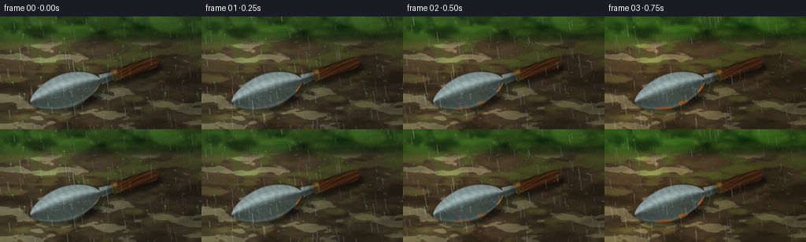
展开代码变化
--- 上一保存版本
+++ 本次保存版本
@@ -384,22 +384,24 @@
metal_color += (np.array([0.66, 0.78, 0.80]) - metal_color) * drop_mask[..., None] * 0.44
# Oxidation begins on edges and scratches, then blooms across the blade.
- rust_noise = 0.52 * static["medium"] + 0.30 * broad + 0.18 * fine
+ rust_noise = 0.43 * static["medium"] + 0.25 * broad + 0.32 * fine
scratches = 0.5 + 0.5 * np.sin(u * 0.043 + 2.6 * np.sin(v * 0.035) + 3.2 * medium)
edge_bias = smoothstep(0.60, 1.00, vnorm)
- rust_score = 0.54 * rust_noise + 0.28 * edge_bias + 0.18 * scratches
- threshold = 0.91 - 0.81 * np.power(p, 0.86)
+ rust_score = 0.48 * rust_noise + 0.29 * edge_bias + 0.23 * scratches
+ threshold = 0.89 - 0.75 * np.power(p, 0.82)
rust_alpha = smoothstep(threshold - 0.055, threshold + 0.075, rust_score)
rust_alpha *= blade.astype(np.float32)
- oxide_dark = np.array([0.29, 0.105, 0.035])
- oxide_mid = np.array([0.54, 0.225, 0.060])
- oxide_hot = np.array([0.76, 0.38, 0.095])
+ oxide_dark = np.array([0.34, 0.115, 0.032])
+ oxide_mid = np.array([0.64, 0.255, 0.047])
+ oxide_hot = np.array([0.88, 0.435, 0.082])
oxide = oxide_dark * (1.0 - rust_noise[..., None]) + oxide_mid * rust_noise[..., None]
- oxide += (oxide_hot - oxide_mid) * np.maximum(medium - 0.57, 0)[..., None] * 1.6
- oxide *= (0.80 + 0.35 * fine[..., None])
- pits = smoothstep(0.84, 0.97, 0.65 * fine + 0.35 * broad) * rust_alpha
- oxide *= (1.0 - 0.42 * pits[..., None])
+ oxide += (oxide_hot - oxide_mid) * np.maximum(medium - 0.48, 0)[..., None] * 1.7
+ oxide += (oxide_hot - oxide_mid) * np.maximum(fine - 0.63, 0)[..., None] * 1.3
+ oxide *= (0.90 + 0.23 * fine[..., None])
+ pits = smoothstep(0.88, 0.98, 0.60 * fine + 0.40 * broad) * rust_alpha
+ oxide *= (1.0 - 0.34 * pits[..., None])
+ oxide += np.array([0.32, 0.20, 0.10]) * pits[..., None] * 0.34
metal_color = metal_color * (1.0 - rust_alpha[..., None]) + oxide * rust_alpha[..., None]
metal_color += np.array([0.12, 0.17, 0.17]) * drop_mask[..., None] * rust_alpha[..., None] * 0.42
候选 05播放与检查图
点击播放 · 原生 RGB 像素
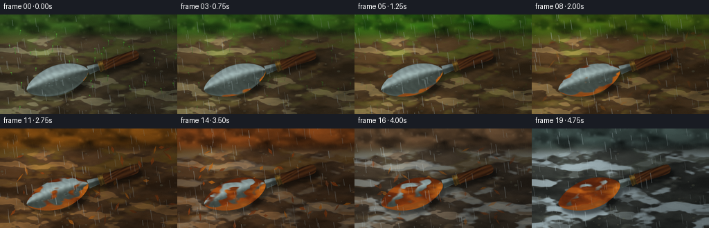
展开代码变化
--- 上一保存版本
+++ 本次保存版本
@@ -24,18 +24,18 @@
def resize_float(array: np.ndarray, size: tuple[int, int], resample=Image.Resampling.BICUBIC):
- image = Image.fromarray(np.clip(array * 255.0, 0, 255).astype(np.uint8), "L")
+ image = Image.fromarray(np.clip(array * 255.0, 0, 255).astype(np.uint8))
return np.asarray(image.resize(size, resample), dtype=np.float32) / 255.0
def blur_float(array: np.ndarray, radius: float):
- image = Image.fromarray(np.clip(array * 255.0, 0, 255).astype(np.uint8), "L")
+ image = Image.fromarray(np.clip(array * 255.0, 0, 255).astype(np.uint8))
return np.asarray(image.filter(ImageFilter.GaussianBlur(radius)), dtype=np.float32) / 255.0
def noise_field(rng: np.random.Generator, size: tuple[int, int], base: tuple[int, int], blur=0.0):
small = rng.random(base, dtype=np.float32)
- image = Image.fromarray((small * 255).astype(np.uint8), "L")
+ image = Image.fromarray((small * 255).astype(np.uint8))
image = image.resize(size, Image.Resampling.BICUBIC)
if blur:
image = image.filter(ImageFilter.GaussianBlur(blur))
@@ -438,7 +438,7 @@
def add_shadow_and_trowel(image, trowel_color, object_mask, palette):
- mask_image = Image.fromarray((object_mask * 255).astype(np.uint8), "L")
+ mask_image = Image.fromarray((object_mask * 255).astype(np.uint8))
shifted = Image.new("L", (W, H), 0)
shifted.paste(mask_image, (19, 25))
shadow = np.asarray(shifted.filter(ImageFilter.GaussianBlur(12)), dtype=np.float32) / 255.0
@@ -516,7 +516,7 @@
image = np.clip(image, 0, 1)
image = np.power(image, 0.94)
- small = Image.fromarray((image * 255).astype(np.uint8), "RGB").resize(
+ small = Image.fromarray((image * 255).astype(np.uint8)).resize(
(WIDTH, HEIGHT), Image.Resampling.LANCZOS
)
return np.asarray(small, dtype=np.uint8)
可观测工具轨迹
实际执行的命令与返回图片。
命令 1exit 0
/bin/bash -c "pwd && rg --files -g 'prompt.txt' -g 'GENERATION_RULES.md' -g 'task_spec.json' -g '"'!node_modules'"'"
命令 2exit 0
/bin/bash -c 'ls -la'
命令 3exit 0
/bin/bash -c 'cat prompt.txt'
命令 4exit 0
/bin/bash -c 'cat GENERATION_RULES.md'
命令 5exit 0
/bin/bash -c 'cat task_spec.json'
命令 6exit 0
/bin/bash -c "sed -n '1,240p' artifact_io.py && sed -n '1,220p' player_template.html"
命令 7exit 0
/bin/bash -c "python - <<'PY'
from PIL import Image
import numpy as np
print('PIL', Image.__version__)
print('numpy', np.__version__)
PY"命令 8exit 0
/bin/bash -c "python - <<'PY'
try:
import scipy; print('scipy', scipy.__version__)
except Exception as e: print('no scipy',e)
try:
import cv2; print('cv2', cv2.__version__)
except Exception as e: print('no cv2',e)
PY"命令 9exit 1
/bin/bash -c 'python generate.py'
命令 10exit 0
/bin/bash -c 'python generate.py'
命令 11exit 0
/bin/bash -c "python - <<'PY'
from PIL import Image
for n in (0, 19):
im=Image.open(f'frames/{n:02d}.png')
im.resize((1024,576),Image.Resampling.NEAREST).save(f'.tmp/frame{n:02d}_4x.png')
PY"命令 12exit 0
/bin/bash -c 'mkdir -p .tmp/candidate1 && cp -r frames inspection.png transition_check.png pixels.npz index.html .tmp/candidate1/'
命令 13exit 0
/bin/bash -c 'python generate.py'
命令 14exit 0
/bin/bash -c 'mkdir -p .tmp/candidate2 && cp -r frames inspection.png transition_check.png pixels.npz index.html .tmp/candidate2/'
命令 15exit 0
/bin/bash -c "python - <<'PY'
from PIL import Image
for n in (0,5,10,14,19):
im=Image.open(f'frames/{n:02d}.png')
im.resize((1024,576),Image.Resampling.NEAREST).save(f'.tmp/frame{n:02d}_4x.png')
PY"命令 16exit 0
/bin/bash -c 'python generate.py'
命令 17exit 0
/bin/bash -c "python - <<'PY'
import json
from pathlib import Path
import numpy as np
from PIL import Image
spec=json.loads(Path('task_spec.json').read_text())
frames=sorted(Path('frames').glob('*.png'))
print('spec',spec)
print('frame_count',len(frames))
arr=np.stack([np.asarray(Image.open(p).convert('RGB')) for p in frames])
print('stack_shape',arr.shape,'dtype',arr.dtype)
print('range',int(arr.min()),int(arr.max()),'mean',round(float(arr.mean()),2))
print('pixels_npz',Path('pixels.npz').stat().st_size)
print('index_html',Path('index.html').stat().st_size)
print('required',all(Path(p).is_file() for p in ['generate.py','pixels.npz','index.html','inspection.png','transition_check.png']))
PY"命令 18exit 0
/bin/bash -c 'git status --short 2>/dev/null || true'
命令 19exit 0
/bin/bash -c 'python generate.py'
命令 20exit 0
/bin/bash -c "python - <<'PY'
import json
from pathlib import Path
import numpy as np
from PIL import Image
spec=json.loads(Path('task_spec.json').read_text())
frames=sorted(Path('frames').glob('*.png'))
arr=np.stack([np.asarray(Image.open(p)) for p in frames])
assert arr.shape == (spec['frames'], spec['height'], spec['width'], 3)
assert arr.dtype == np.uint8
with np.load('pixels.npz') as data:
assert data['pixels'].shape == (spec['height'], spec['width'], spec['frames'])
assert data['pixels'].dtype == np.uint32
print('validated',arr.shape,'mean',round(float(arr.mean()),2),'files',len(frames))
PY"视觉工具实际返回图片 1
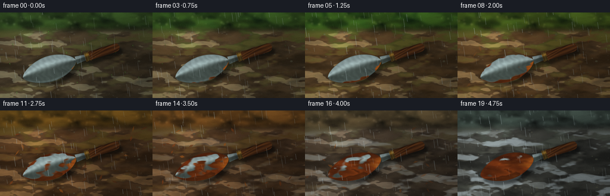
视觉工具实际返回图片 2
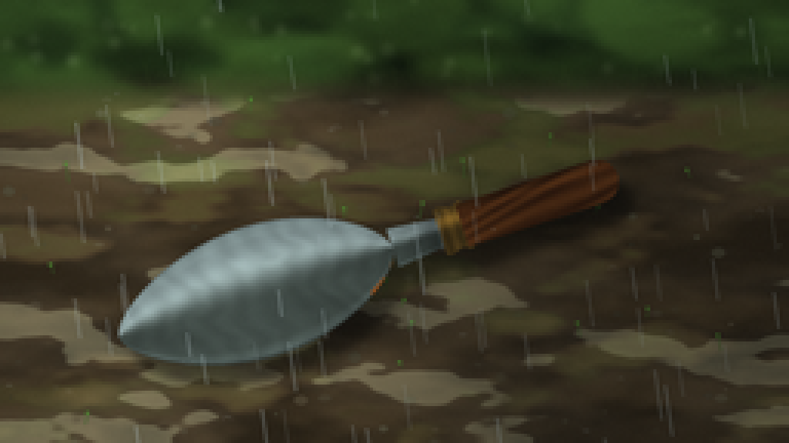
视觉工具实际返回图片 3
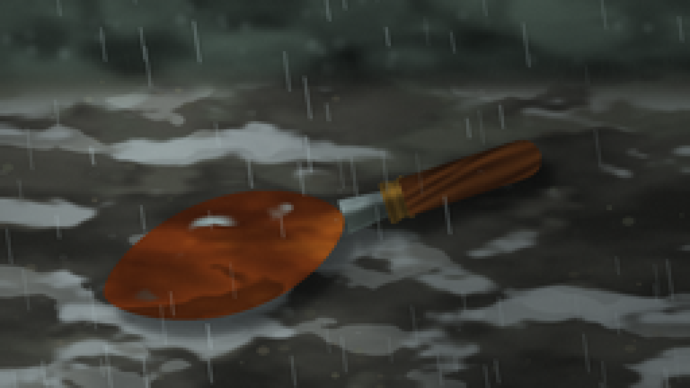
视觉工具实际返回图片 4
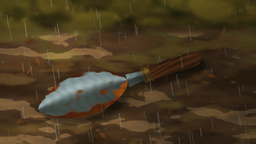
视觉工具实际返回图片 5
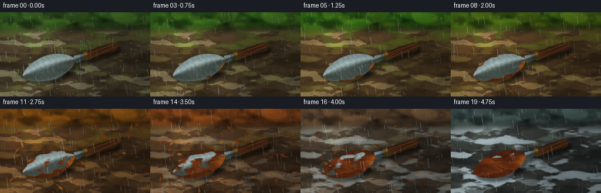
视觉工具实际返回图片 6
视觉工具实际返回图片 7
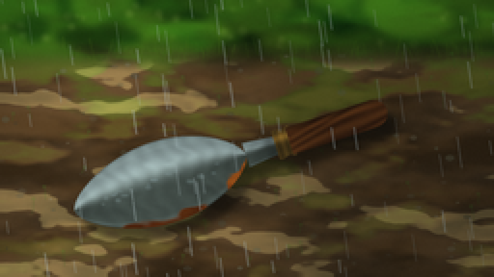
视觉工具实际返回图片 8
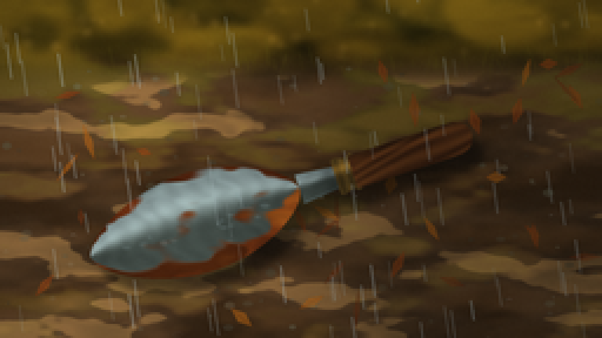
视觉工具实际返回图片 9
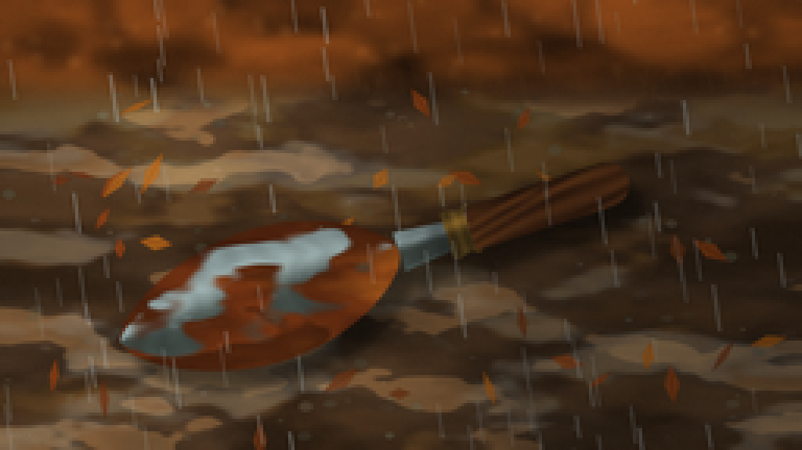
视觉工具实际返回图片 10
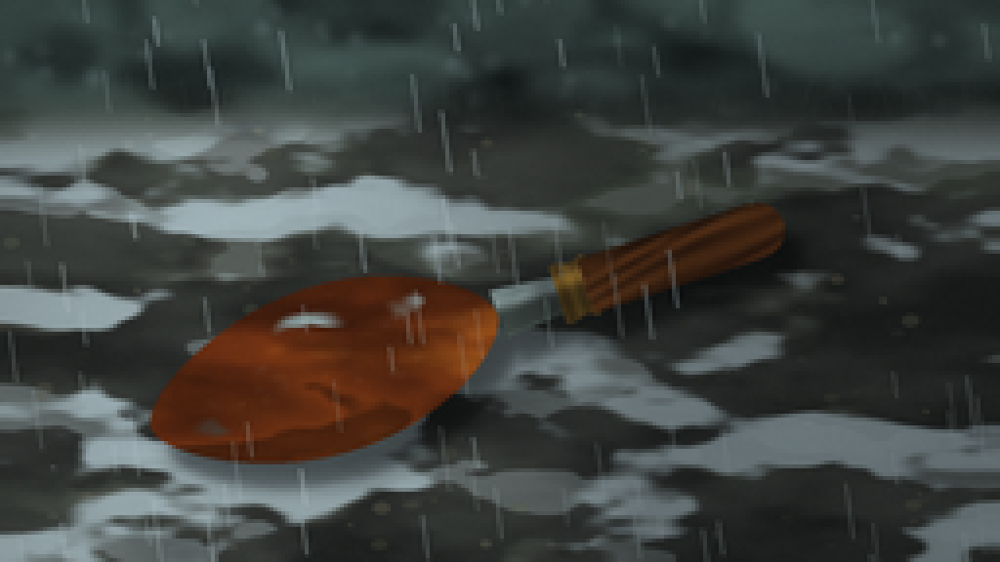
视觉工具实际返回图片 11

视觉工具实际返回图片 12

保存候选 5 份；完成命令 20 次；可验证图片返回 12 张。原始 API 响应与完整日志保留在本地。